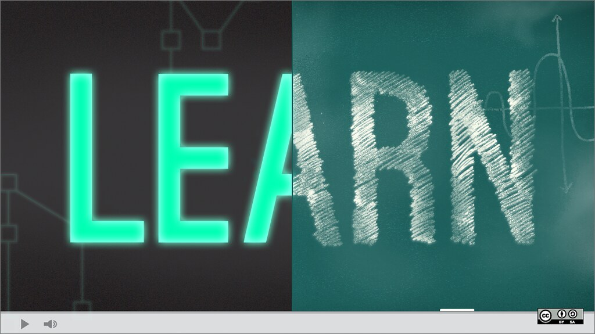

3 cosas sobre mí
App web que uso a diario

Me gusta mucho viajar y tomar fotos. Me encantaría poder visitar algún país caribeño u oceánico.
Foto tomada por mí en Galicia

Me encantaría aprender a cocinar mis propios platos de comida. Me interesa mucho la comida de países del este asiático en especial.
Esto es arroz frito con soja chino

Me gusta mucho la música. Uno de mis géneros favoritos es el Jazz
Esto es la portada del album de Himiko Kikuchi, "Flying Beagle"

Una aplicación web que uso a diario es Twitter / X.
2 Cosas que no dejaría de hacer
No dejaría nunca de querer viajar a países nuevos y conocer su gente.

Nunca dejaría de hacer y aprender cosas nuevas.